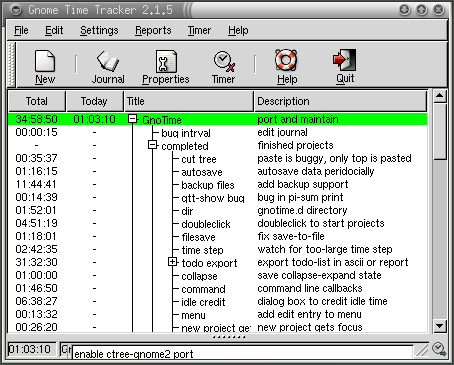
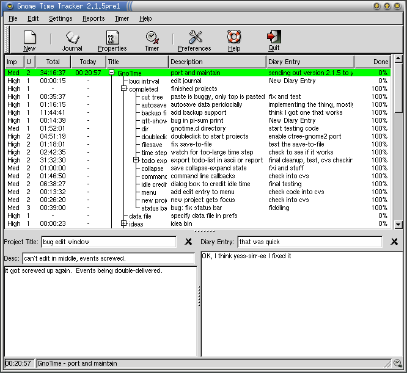

GnoTime - The Gnome Time Tracker
 The Gnome Time Tracker is a to-do list/diary/journal tool
that can track the amount of time spent on projects, and,
among other things, generate reports and invoices based on
that time. It's being used it to keep shopping lists,
organize ideas, track bug reports, keep a diary of activities,
do some blogging, provide weekly status reports to management,
and even as a consultant billing system. The reason it can
be used for all of these things is that it supports five basic,
simple features:
The Gnome Time Tracker is a to-do list/diary/journal tool
that can track the amount of time spent on projects, and,
among other things, generate reports and invoices based on
that time. It's being used it to keep shopping lists,
organize ideas, track bug reports, keep a diary of activities,
do some blogging, provide weekly status reports to management,
and even as a consultant billing system. The reason it can
be used for all of these things is that it supports five basic,
simple features:
- Multiple To-Do Lists that can be sorted by the
priority/importance of the tasks in the list. The to-do
items can be organized into categories, arranged in a
hierarchical way. This makes it easy to maintain
both business and personal items in the list, or
handle many different projects, while keeping them
separate from each other.
- A pair of Diary/Journal areas that can be used
to keep long and detailed notes and diary entries.
The project description area allows a multi-paragraph
description or status to be typed in. The diary
area allows day-to-day notes to be associated with
a set of timestamps, so that one has a record of what
one did on any given day.
- A Running Timer, with time totals, for each
project/task. One starts the timer by clicking on a
task: it will measure the amount of time that you are
in front of the computer. If it detects that the
keyboard/mouse are idle, it will stop the clock.
If the clock stays stopped too long, it will nag you to
start it up again. You can view time totals by day,
week, month or year.
- A Billing Status dialog for each diary entry.
You can mark any given diary entry as bill-able/non-bill-able,
paid or pending, and set the billing rate. Each
project can also be marked up with a set of
project-planning information: planed start, end and
due dates, hours to finish, percent-complete.
This is in addition to assigning an urgency/importance
to each project, as well as a status (completed/in-progress
not-started/canceled).
- A half-dozen different HTML Reports that can
slice and dice your lists. There's a Journal report
that shows all of the diary entries for one given project.
There's an Invoice
report that summarizes the time spent on each entry,
and computes a dollar amount for it. There's a Status
Report that prints the title of each project, together
with the paragraph-long descriptions of each. There's
a ToDo report, which prints only the project title, the
importance/urgency, and the completed/in-progress/not-started
status. The Daily report summarizes the total time
spent on a day-by-day basis, and lists each of the projects
that were worked on in a given day. Each of these reports
can be customized. And, because they're HTML, you can
even publish them as web pages. (Yes, I've thought of
using GnoTime as a weblog management/publishing tool).
More About Some of These Features
We'd like to tell you a bit more about some of the features.
But first, we want to tell you that GnoTime is Free Software,
distributed under the GPL License, for the Linux, Mac OSX and
other Unix desktops. No, it does *not* for MS Windows. Sorry.
- Simple GUI, Simple Navigation
- We've worked to try to make the GUI as simple as we can,
and we're not done yet. GnoTime will auto-save data,
so that you don't have to. (It also means no data loss
if something crashes). The hierarchical tree of projects
is managed through drag-n-drop, and can be navigated from
the keyboard, with arrows keys and carriage returns.
The left/right arrow keys expand/collapse project lists.
Hitting return starts and stops the timer.
- Auto-Merge/Cleanup of Short Intervals Support
- We also try to unclutter a mess of timer stops/starts
by trying to clean up time-keeping cruft.
Extremely short time intervals are automatically removed
from the logs (the length is configurable).
Slightly longer but still short intervals
are auto-merged into nearby neighbors. Short gaps between intervals
are coalesced as well. You can specify a time period of 0 seconds
to turn these features off.
- User-Customizable HTML-based Reports
- The journal/report GUI is based on template HTML pages. If you know
HTML, then you can create customized report pages. Particularly
handy for slapping the company logo and mailing address on the top
of the page, and generating a unique, custom look.
User-defined reports (contained in ghtml files)
can be added to the
menus by typing in the filename into the 'New Report' GUI dialog.
Admittedly, hacking on HTML templates is not the easiest
thing in the world: you can't (yet) customize reports
with a WYSIWYG editor (although we are contemplating one).
But we figure that HTML can't be that hard: the nerd in
you will not be intimidated. It might be a bit scary to
mention scheme at this point, but lets just say that
you can be totally ignorant of scheme and still be able
to do some pretty fancy customization, above and beyond
what HTML lets you do, by hacking on the scheme in the report
templates.
Fresh in version 2.1.9 is the ability to embed simple SQL
queries in the report templates. We know that many of you
power users know SQL, so we figure you'll like this. The
SQL gives you the ability to query for only those projects/tasks
that meet a certain criteria, which is handy if you've got
years worth of data and years worth of project lists and
to-do items, and you want to just fish out the ones from
last month.
Disclaimer: we're still working on SQL support. It works,
but you can't yet query everything.
- Shell Commands
- A shell command can be executed whenever a project timer is
started or stopped. The project title, description and other
parameters can be passed to the shell command. We don't know
what the hell you power users do with this feature; its
been in GTT since the very earliest releases.
- XML File Format
- All project and journal data are stored in an XML file format.
The XML file accurately reflects the internal state of the
GnoTime data, and therefore generic XML tools should be able
to perform interesting transformations on this data.
- Multi-Language Support
- The GnoTime menus and messages have been translated to dozens of
languages. There are message catalogs for the following locales:
az bg ca cs da de el en_GB es et eu fi fr ga gl hu it ja ko lt lv ms nl
nn no pl pt pt_BR ro ru sk sl sv ta tr uk vi wa zh_CN zh_TW
Some of these translations need an update; they're quite old and
out of date. We need help here.
Translations are needed for the manual. Actually, the manual needs
a complete re-write; its three years old, and doesn't discuss most
of the newer features.
Screenshots
Below are a couple of screenshots from the current
Gnome2 version of GnoTime.
The screenshots pages shows more.
The main window screen, showing all-time and daily totals:

The same main window screen, but with additional columns
enabled to show project status. Note the new notes-taking
area at the bottom of the screen.

Works on Apple Mac OSX too
Well, sort-of. Here's a screenshot of a port under Macintosh OSX Fink;
unfortunately, this port was never finished/published.

Getting GnoTime
Your favorite distribution (Debian, RedHat/Fedora, SUSE, Fink) already
includes pre-compiled binaries of GnoTime, and you should probably
be searching those out, and installing and working with those.
That way, you at least have some guarantee that its been tested
and is known to work with your system.
If you are adventurous, and know how to compile from source,
and absolutely must have the latest and greatest version, then
visit
http://sourceforge.net/projects/gttr/
to get the source-code tarballs, instructions for CVS access, etc.
Reporting Bugs, Requesting Features, Submitting Patches
If you found a bug, please rest assured that we will
not fix it unless you report it (and even then,
it may take us a while). To report a bug, please visit the
SourceForge
project site, and follow the links.
The same remarks apply for feature requests and patches.
The best place to submit a patch is to sourceforge. That
way, we won't loose track of it.
Mailing Lists
If you have questions, want to make comments, or engage in
general discussions, you can subscribe to the mailing list,
or you can post to the discussion bulletin-board. You can get
to either through the
SourceForge
project page.
Web Site Mirrors
There are two web site mirrors:
WE NEED YOUR HELP !!
We need your help to make GnoTime better. It sure would be nice to
have a fancier web site for this project, maybe some nice graphics.
Can you help?
News
The latest releases continues to focus on usability and convenience
features, making GnoTime easier to use and thus more powerful.
- New in the 2.3.0 Release (February 2008)
- The main changes in this release are:
- a new implementation of the projects tree using the GtkTreeView
component which fixes a lot of the bugs regarding the projects
tree manipulation and prepares the way for many customizations
in future releases.
- an initial implementation of a tray icon that displays timer status
and allows the user to toggle the timer by clicking on it.
- a rewrite of the idle detection using the XScreenSaver extension and
of the timer system to make it more system power conservation
friendly.
- port of the report system to use guile version 1.8.
- many changes in the configure script, including porperly checking for
guile and gconf and version of available DBUS.
- removal of some deprecated APIs usage.
- In addition, many bugs have been fixed, including:
- broken behavior of drag-and-drop (#1856268)
- compiles but crashes on startup in fedora core 5 (#1802501)
- activity journal truncates seconds (#1706365)
- green bar flickers when value changes (#1171204)
- dragging project to make sub-project will not scroll (#831808)
- New in the 2.2.3 release (September 2007)
- This release brings better internationalization in reports with locale
based formating of times and monetary values. The newly added support
for DBus messages allows users to start/stop the timer and save/reload
the data file from the command line using the gnotime-remote
script. Also, an update user's manual covers most of the features
available in this version. In addition, many bugs have been fixed,
including:
- Crash when saving to full filesystem (#1548248)
- Day of century calculation error causing skipped day in reports
- Conflicting keybindings (#1639477)
- Invoice report doesn't work in locales other than C
- Hidden question dialog when overwriting file during report saving
- New in the 2.2.2 release (September 2005)
- This release includes over two dozen fixes to build, install
and operation issues. These include a fix to a major issue
involving copying data files to a new computer. A short
summary of fixes include:
- Build against QOF version 0.6.0, if available.
- Fix issue where yelp doesn't display an entry for gnotime
when browsing because it doesn't recognize the entry
- Fix sourceforge bug [ 799077 ] projects blanked when first time user
tries to sort
- fix broken leap-year calculation, leading to bugs
sourceforge bugs [ 983408 ] and [ 1114205 ]
- Fix crash due to hoverhelp timer popping after
a report window is closed.
- Change activity report to display
date/time in two distinct html table columns (prettier alignment)
- Bug fix: sourceforge bug report fixed
[ 877193 ] toolbar won't go to/stay in text-only mode
- Bug fix: editing time brings up wrong report
- fedora .spec file
is out of date and rpm cannot build rpm
- Fix bug involving copy of old gnotime files to a new machine
on which gnotime has never been run before.
- Fix sourceforge bug [ 1276458 ] "Empty" appears in diary entry
- Apply sourceforge patch 1176719 Extensible fix for gtkhtml3 building
- Apply 1171394 Adds separate timeout for "No Project" dialog
- Apply sourceforge patch 085911 Add "-" value for status field
- Apply sourceforge patch 074658 Add wordwrapping to diary entry boxes
- Apply sourceforge patch 1074458 Fix a crash when invoking help
- Apply sourceforge patch 1038701 Fix to Activity item in popup menu
- Apply sourceforge patch 1027582 Build system update for qof inclusion
- Fix idle time so that it works with Linux 2.6 kernel /proc/interrupts
- use %e to see the estimated sizing of a project in the logfiles
- Apply new pt_BR translation from Goedson Teixeira Paixao
- Fix for Debian Bug #250776, change widget visibility
in the edit interval dialog
- New in the 2.2.0 release (April 2004)
- This release sports a brand-new look-n-feel for the reports,
together with improved URL support.
The reports now use CSS style sheets, and can contain embedded
images. A 'publish' function using GnomeVFS makes it easier
to copy reports to other systems, using ssh, ftp, http or any
other supported method. In addition, the following bugs were
fixed:
- Crashes when 'help' button clicked in certain dialogs.
- Corruption of 'reports' menu, followed by crash.
- Fix flyover help to actually work.
- Add missing 'copy' to interval edit popup menu.
- New in the 2.1.9 release (April 2004)
- This release fixes a number of bugs in earlier releases.
- Keyboard events were not resetting the timeout
- Fix Help system so that help actually starts up.
- Fix old, multiple scheme bugs affecting billing reports.
- Provides 'infinite undo' for cut projects.
- Keyboard cut (ctrl-x) fixed so that it cuts only if project
window has focus.
- Can now specify day-of-week for the start of a new week.
Also, end-of-day need not be midnight - its now configurable.
- Remove obsolete menu entries (clear daily counters)
- Fix flyover help on HTML reports
- Fix order of yesterday/today columns.
- Improve checks for Guile during builds
- New whiz-bang SQL for reports.
- New in the 2.1.8 release (April 2004)
- This release adds support for simple report queries. In particular,
reports can now be generated for all tasks that occurred between a
pair of dates; an extremely general query system is now in place,
although it is not used except to perform this simple date query.
Toshio Kuratomi provided a major cleanup of the documentation
subsystem. Goedson Teixeira Paixao provided a new pt_BR translation.
A variety of minor bugs were fixed, including a crash of the
'yelp' help browser.
- New in the 2.1.7 release (June 2003)
- Version 2.1.7 fixes some internationalization bugs, and ports the
configuration system to GConf2. The 'custom reports' menu is now
editable.
- New in the 2.1.6 release
- The "Daily Report" will show not only the total hours worked,
day by day, but will also show a bulleted list of tasks worked
that day. The main window display can now show total hours worked
for previous day and previous week. Sub-projects can now be fetched
via scheme, allowing them to be included in reports. The scheme
subsystem now includes an elementary type system, allowing more
complex structures to be built. A half-dozen different crashes
have been fixed.
- New in the 2.1.5 release (January 2003)
- The main window has been reformulated in a big way: It
now includes sub-panels for editing project and diary notes.
This 'notes area' makes it far more convenient to make
extensive notes and 'blog' your way through a set of projects.
Also fixes bugs with backup timestamps, also with cut-n-paste
of project trees.
- New in the 2.1.4 release (December 2002)
- The scheme interface re-design has been finished.
This means that the HTML reports are far, far more
configurable, and can be made to look much prettier.
The old, nasty table-formatting features have been removed.
It also means that tab-delimited export now works cleanly,
and other export formats can be easily added.
- Older News
- Click here for older news items.
Technology Choices/Overview
GnoTime is currently written mostly in C and a little bit of
Scheme. C is used to implement
all of the core functions, whereas Scheme is used to generate the
HTML reports. The Scheme/HTML combo was chosen in order to make
it easy to customize reports, while allowing the result to be easily
viewed in a browser, sent by email, etc. The GUI system is
all in Gnome, using the Glade interface designer.
The file format is in XML, following current trends.
There are some interesting directions one could play with.
For example, rather than creating reports with embedded
Scheme, one could try to use GnoTime's XML data format
as a mirror of its internal state, and then use
DOM to extract
various parts out of it, and thus build reports that way.
Technology/Features Roadmap
Similar/Different Projects
- Gournal,
Note-taking tablet application. A paper-like interface
allows you to hand-write notes. This is a gnome app
(actually, gtk2/perl).
-
Jarnal, a Java-based note-taking tablet app.
- QBall's GToDo
is a simple Gnome2 to-do list application.
- Quozl's GFocusTimer
tracks which windows your mouse is in.
- GTimer,
an older gtk-1.2 timer application.
- KArm
is a simple KDE/Qt-based time-tracker.
See also this website.
- PTT
another KDE-based time tracker.
- Titrax
is a very old (early/mid 90's) X-Windows time tracking tool.
This is a nice historical snapshot providing a glimpse of the
way things used to be in the Unix world back then.
- LinuxLinks
provides a huge list of Linux timer software.
- Journyx, an up-scale, commercial
web-based time tracking and billing tool.
Last modified by Linas Vepstas <linas@linas.org>
March 2004
In memory of the World Trade Center bombing, which occurred while
the first major revision of gtt was being written.